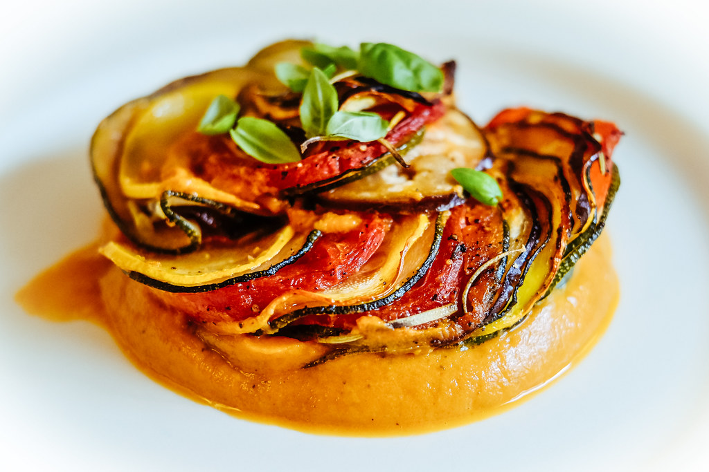

Ratatouille

Description
Ratatouille is a French stew made with late summer vegetables like eggplant, tomatoes, peppers, and zucchini. It's rich with olive oil, bright with vinegar, and flecked with fresh herbs.
Ingredients
- eggplant
- zucchini
- tomatoes
- mushrooms
- onion
- green bell pepper
- dried parsley
- garlic
Steps
-
Preheat the oven to 350 degrees F (175 degrees C). Coat the bottom and sides of a 1 ½-quart casserole dish with 1 tablespoon olive oil.
-
Heat remaining 1 tablespoon olive oil in a medium skillet over medium heat. Cook and stir garlic until fragrant and golden brown. Add eggplant and parsley; cook and stir until eggplant is tender and soft, about 10 minutes. Season with salt to taste.
-
Spread eggplant mixture evenly across the bottom of the prepared casserole dish; sprinkle with a few tablespoons of Parmesan cheese. Spread zucchini in an even layer over top. Lightly salt and sprinkle with a little more cheese. Continue layering in this fashion, with tomatoes, mushrooms, onion, and bell pepper, covering each layer with a sprinkling of salt and cheese
-
Bake in preheated oven until vegetables are tender, about 45 minutes.